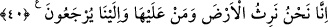

inanmamakta ısrar ederlerken iş bitirilmiş olur.
Ey Muhammed! “Onları” yani o zâlimleri “şu hasret gününe”, insanların
üzülecekleri ve kesin olarak pişman olacakları güne “karşı uyar” onları korkut. O gün,
kötülük yapanlar kötülüklerinden dolayı, iyilik yapmış olanlar ise yaptıkları iyiliğin
azlığından dolayı pişmanlık duyarlar. “Ki o zaman kendileri” âhirette onlara ne
yapılacağından “gaflet içinde inanmamakta ısrar ederlerken” yâni onlar bu iki halde
iken “iş bitirilmiş olur.” Yani hesap bitirilmiş olur. Cennetlikler cennete,
cehennemlikler de cehenneme götürülür.
Rivâyet edildiğine göre Hz. Peygamber (a.s.)’a bu durum soruldu; o da şöyle cevap
verdi: “Ölüm semiz bir koç şeklinde getirilip kesildiğinde iki grup (cennet ve
cehennem ehli) bakarlar. Bir münâdî şöyle bağırır: “Ey cennet ehli ebedî olarak,
ölümsüz bir şekilde cennete, ey cehennem ehli, ebedî ve ölümsüz olarak cehenneme
girin!” O zaman cennet ehlinin sevincine sevinç, cehennem ehlinin de üzüntüsüne
üzüntü katılır.”[20]
40. Yeryüzüne ve onun üzerindekilere ancak biz vâris oluruz ve onlar ancak bize
döndürülürler.
“Yeryüzüne ve onun üzerindekilere ancak biz vâris oluruz.” Yani dünyada ve
üzerinde bulunanlara sadece biz sahip oluruz. Onlar üzerinde bizden başkasının
hâkimiyet ve mülkiyeti kalmaz. Bu âyetle ilgili açıklama Hicr sûresinde (23. âyetin
tefsirinde) geçmişti.
“Ve onlar ancak bize döndürülürler.” Yani yaptıklarının karşılığını almak için
müstakil veya müşterek olarak bizden başkasına değil sadece bize döndürülürler.
Bil ki dönüş iki türlüdür: Birincisi, kahırla (zorla) dönmek ki bu, avâmın dönmesidir.
Çünkü onların nefisleri dünyada kalmış, onunla tatmin olmuştur. Onlar içinde
bulundukları bu durumdan ancak zorla çıkarlar. İkincisi ise lütufla dönmektir ki, bu da
havâssın dönmesidir. Çünkü onların nefisleri Allah’ta fânî olmuştur. Dünya ve âhiretle
tatmin olmazlar, ancak Yüce Mevlâ ile tatmin olurlar. Ölüm ve Allâh’a kavuşmak onlar
için her şeyden daha sevimlidir. İşte bu hâlde dünyadan çıkarlar.
Şu halde sâlike düşen, fenâ ve bakâyı elde etmeye, Allâh’a ulaşmaya olan şevkini
kemâle erdirmeye ve Allâh’a döndürülmeden önce O’na dönmeye gayret etmektir.
Çünkü: “Bugün mülk/hükümranlık kimindir?” (el-Mü’min, 40/16) sırrı, buna
dâirdir.
Kahır rüzgarı vahdet mümkininden esti
Taayyün çör çöpünün cümlesini berhevâ etti